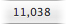
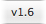

The status bar is located at the bottom of the browser:
The first button in the status bar controls visibility of the source list:
| Hides (or shows) the source list to the left of the working copy browser. This is equivalent to toggling the View > Show Source List menu item (key equivalent ⌥⌘S) |
The next three buttons control which items are displayed in the browser:
| Show ignored files and folders. This is equivalent to toggling the View > Show Ignored Items menu item | |
| Show the repository status of the browser items. This is equivalent to toggling the View > Show Repository Status menu item
Enabling View > Show Repository Status will cause Cornerstone to contact the repository every time the working copy is committed, updated or refreshed in the browser. Depending on the location of your repository this can have a significant impact on browser performance.
|
|
| Show the contents of external definitions. This is equivalent to toggling the View > Show Contents of Externals menu item
Enabling expansion of large external directories can have a significant negative impact on browsing performance, especially when combined with View > Show Repository Status |
The last update revision of the current folder is displayed in the status bar.

The status bar also displays the format version of the working copy:
